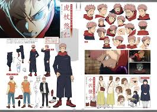

Jujutsu Kaisen es una serie de anime japonesa producida por MAPPA, basada enel manga Jujutsu Kaisen de Gege Akutami .
Yuji Itadori es un estudiante de secundaria que vive en Sendai con su abuelo. Se une al Club de Investigación de lo Oculto, a pesar de poseer un talento innato para el deporte. Va a visitar a su abuelo moribundo al hospital todos los días. En su lecho de muerte, su abuelo inculca dos poderosos mensajes dentro de Yuji: siempre ayuda a la gente y muere rodeado de gente.Después de la muerte de su abuelo, Yūji interpreta estos mensajes como una declaración: todos merecen una muerte adecuada. Luego se enfrenta a Megumi Fushiguro, un hechicero que le informa de un talismán de categoría especial en su escuela con el que Yūji recientemente se puso en contacto. Sus amigos del Club de lo Oculto abrieron el talismán, un dedo podrido, que atrajo a la escuela a las Maldiciones, criaturas que surgen a través de emociones negativas. Incapaz de derrotar a las maldiciones debido a su falta de poderes mágicos, Yūji se traga el dedo para proteger a Megumi y sus amigos y se convierte en el recipiente de Ryōmen Sukuna, una poderosa maldición. Debido a su naturaleza malvada, las reglas dictan que debe ser exorcizado (y, por extensión, a Yūji) de inmediato. Sin embargo, a pesar de estar poseído, Yūji todavía puede mantener el control de su cuerpo la mayor parte del tiempo. Al ver esto, Satoru , el maestro de Megumi, decide llevarlo a la escuela Tokyo Prefectural Jujutsu High School para proponer un plan a sus superiores: posponer la sentencia de muerte de Yūji hasta que consuma todos los dedos de Sukuna, permitiéndoles matarlo de una vez por todas.
En 2017, Gege Akutami publicó Tokyo Metropolitan Curse Technical School, una serie de 4 capítulos que se publicó en Jump GIGA del 28 de abril al 28 de julio.Esta serie serviría más tarde como una precuela de Jujutsu Kaisen, siendo titulada retroactivamente como Jujutsu Kaisen 0.Akutami comenzó la publicación de Jujutsu Kaisen en el número 14 de 2018 de Shūkan Shōnen Jump, lanzado el 5 de marzo de 2018.
La banda sonora original de la serie de anime está compuesta por Hiroaki Tsutsumi, Yoshimasa Terui y Arisa Okehazama. El primer tema de apertura de la serie es «Kaikai Kitan», interpretado por Eve, mientras que el primer tema final es «Lost in Paradise feat. AKLO» interpretado por ALI.El segundo tema de apertura es «VIVID VICE», interpretado por Who-ya Extended, mientras que el segundo tema final es «give it back», interpretado por Cö Shu Nie.La banda sonora original fue lanzada en un set de 2 CD el 21 de abril de 2021.Anime Limited lanzó la banda sonora digitalmente en América del Norte, Europa y Oceanía el 21 de abril de 2021, tanto en CD como en vinilo en el cuarto trimestre de 2021.
Jujutsu Kaisen es una serie de manga japonesa escrita e ilustrada por Gege Akutami. Se publica desde 2018 en la revista Weekly Shōnen Jump y ha sido adaptada a un exitoso anime por el estudio MAPPA. La historia combina acción, horror sobrenatural y artes marciales en un mundo lleno de maldiciones y hechiceros.
La historia sigue a Yuji Itadori, un estudiante de secundaria con habilidades físicas excepcionales. Tras encontrarse con un objeto maldito (el dedo de Ryomen Sukuna), Yuji termina tragándoselo para proteger a sus amigos, convirtiéndose en el recipiente de Sukuna, una de las maldiciones más poderosas. Desde entonces, es introducido al mundo del Jujutsu, donde los hechiceros luchan contra maldiciones para proteger a la humanidad.
En el mundo de Jujutsu Kaisen existen seres llamados "maldiciones", nacidos de las emociones negativas de los humanos. Los hechiceros jujutsu se entrenan para combatir estas maldiciones mediante técnicas especiales. Estas técnicas incluyen energía maldita, técnicas heredadas y dominios.
Gege Akutami es el creador de Jujutsu Kaisen. Se mantiene bastante reservado y usa un avatar con una máscara para sus apariciones públicas. A pesar de su corta carrera, ha ganado gran reconocimiento mundial gracias al éxito de la serie.
El anime fue estrenado en 2020 y ha tenido dos temporadas principales, además de una película titulada "Jujutsu Kaisen 0", que actúa como precuela centrada en el personaje Yuta Okkotsu.
Jujutsu Kaisen ha sido un fenómeno global, vendiendo millones de copias del manga, ganando premios y generando una gran comunidad de fans. Es considerado uno de los "nuevos grandes" del shōnen moderno junto con Demon Slayer y My Hero Academia.